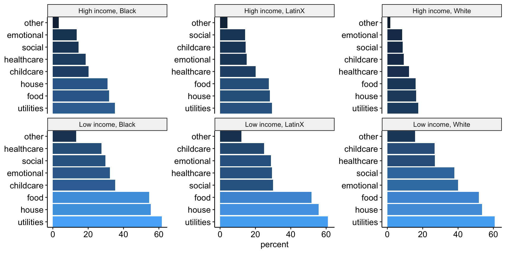

These analyses are based on responses collected from 8390 caregivers between the dates of March 01, 2020 and November 17, 2020. These caregivers represent a range of voices: 5.89% are Black/African American, 11.75% are LatinX, and 20.95% live at or below 1.5 times the federal poverty line. Proportions/percentages are calculated based on the item-level response rates, not out of the total sample size. The data for these analyses are not weighted.
Which needs are hard to pay for?: - Food - Housing - Utilities (electric, water, trash) - Healthcare - Social - Emotional - Childcare - Other
Caregivers grouped into two categories: trouble paying for 1+ basic need, or no trouble paying for any.
For these analyses, data collected in even numbered weeks starting in August were merged with data in the previous week – this was due to a shift to a recruitment strategy that prioritized recruiting underrepresented communities and marginalized caregivers every other week.

Data come from ChildTrends. Legislation related to providing additional funding to childcare providers who offer care to children of essential workers.
Statistical tests
| term | estimate | std.error | statistic | p.value |
|---|---|---|---|---|
| (Intercept) | 0.26 | 0.01 | 29.58 | < .001 |
| No legislation | 0.00 | 0.02 | -0.08 | .934 |
| Black | 0.21 | 0.03 | 6.90 | < .001 |
| LatinX | 0.13 | 0.02 | 6.22 | < .001 |
| Low Income | 0.42 | 0.02 | 25.05 | < .001 |
| No legislation:Black | -0.11 | 0.07 | -1.71 | .086 |
| No legislation:LatinX | 0.03 | 0.06 | 0.57 | .570 |
| No legislation:Low Income | -0.04 | 0.03 | -1.25 | .211 |
| Black:Low Income | -0.23 | 0.05 | -5.01 | < .001 |
| LatinX:Low Income | -0.10 | 0.03 | -2.92 | .004 |
| No legislation:Black:Low Income | 0.24 | 0.09 | 2.59 | .010 |
| No legislation:LatinX:Low Income | -0.05 | 0.08 | -0.65 | .517 |
| term | estimate | std.error | statistic | p.value |
|---|---|---|---|---|
| (Intercept) | 0.26 | 0.01 | 33.82 | < .001 |
| Black | 0.18 | 0.03 | 6.89 | < .001 |
| LatinX | 0.13 | 0.02 | 6.95 | < .001 |
| Low Income | 0.41 | 0.01 | 28.79 | < .001 |
| Black:Low Income | -0.17 | 0.04 | -4.28 | < .001 |
| LatinX:Low Income | -0.10 | 0.03 | -3.33 | .001 |
| term | estimate | std.error | statistic | p.value |
|---|---|---|---|---|
| (Intercept) | 0.38 | 0.01 | 47.08 | < .001 |
| No legislation | 0.02 | 0.02 | 1.01 | .314 |
| Black | 0.18 | 0.02 | 7.21 | < .001 |
| LatinX | 0.14 | 0.02 | 7.98 | < .001 |
| No legislation:Black | -0.01 | 0.05 | -0.14 | .889 |
| No legislation:LatinX | 0.00 | 0.04 | 0.03 | .978 |
| term | estimate | std.error | statistic | p.value |
|---|---|---|---|---|
| (Intercept) | 0.30 | 0.01 | 38.68 | < .001 |
| No legislation | -0.02 | 0.02 | -1.07 | .282 |
| Low Income | 0.39 | 0.01 | 28.22 | < .001 |
| No legislation:Low Income | -0.01 | 0.03 | -0.49 | .626 |
Caregivers report levels of anxiety, depression, loneliness and stress. All variables are POMP scored (i.e., rescaled to have a minimum value of 0 and maximum of 100) and these scores are averaged to create a single mental health composite.
Data come from ChildTrends. Legislation related to providing additional funding to childcare providers who offer care to children of essential workers.
Caregivers report levels of child fussiness and fear. All variables are POMP scored (i.e., rescaled to have a minimum value of 0 and maximum of 100) and these scores are averaged to create a single child mental health composite.
Data come from ChildTrends. Legislation related to providing additional funding to childcare providers who offer care to children of essential workers.